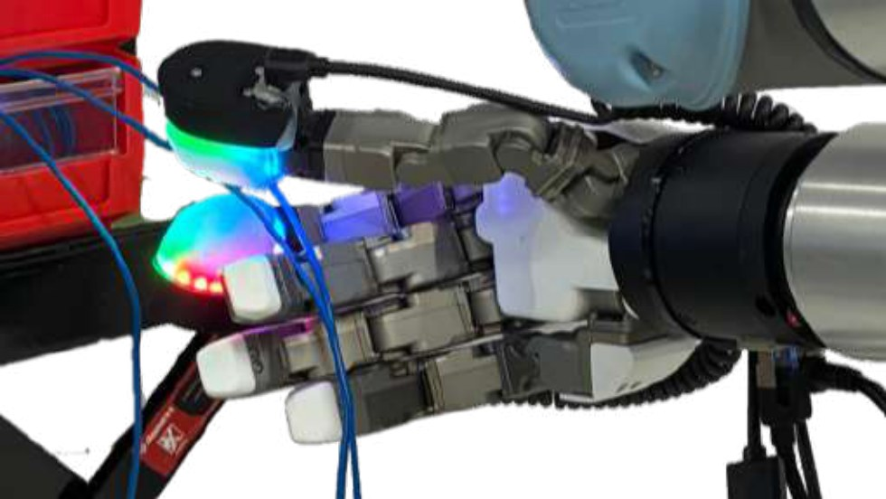
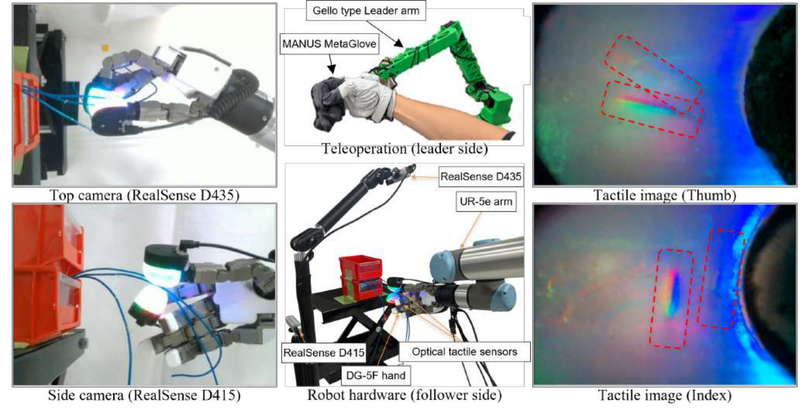
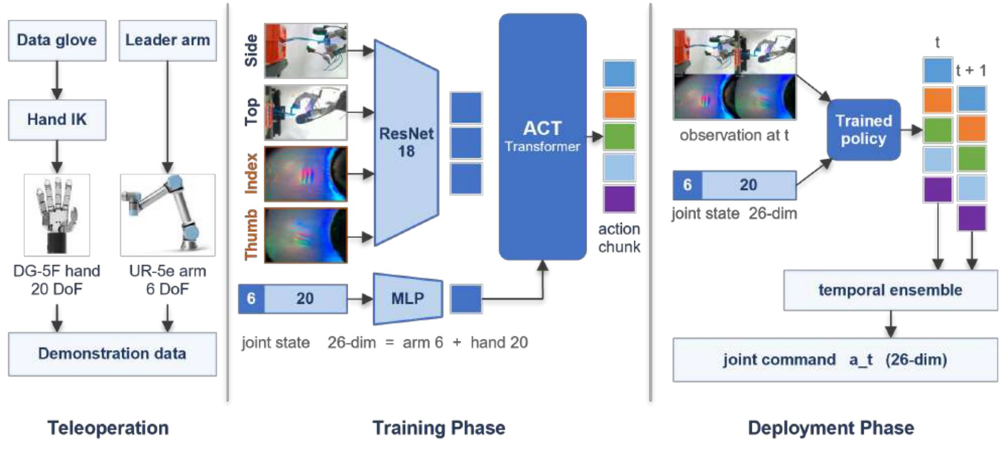
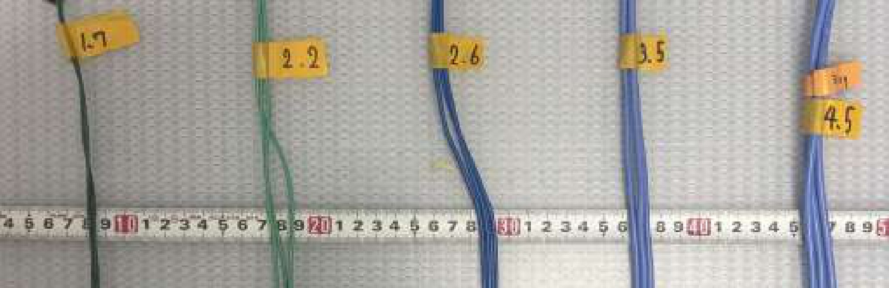
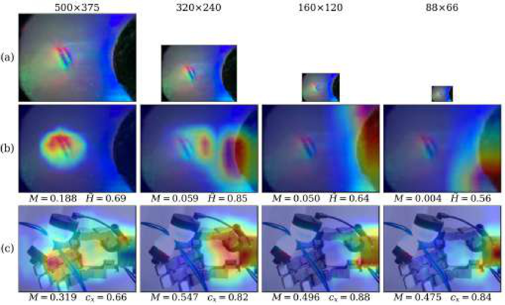
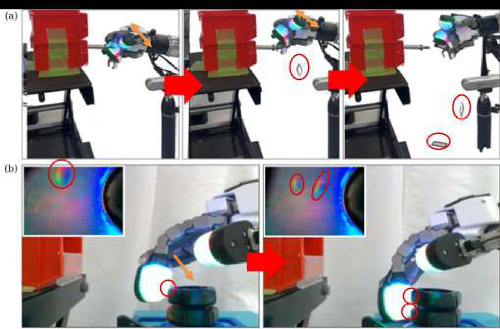

Contact-Rich Fine Multi-Finger Manipulation for Multiple Object Separation with Optical Tactile Sensing and Imitation Learning
Anonymous Submission
All videos are muted. The playback speed is shown in each clip.

Abstract
Automobiles are composed of multiple parts, many of which are deformable such as thin cables and rubber sheets. Automating the handling of these deformable objects remains a difficult task for robot hands, as it requires recognizing fine contact states while performing dexterous take-out motions under continuous change. In this study, we propose an imitation learning pipeline for multi-fingered fine dexterous manipulation with human-mimetic optical tactile sensors at the thumb and index fingertips, while the other three fingers support the objects against gravity, which is critical for deformable linear objects (DLOs). Demonstrations are collected by data-glove teleoperation to capture humans' synchronized smooth motions, and Action Chunking with Transformer (ACT) generates human-like motion through its action chunking and temporal ensembling. The observation consists of two external camera images (640 x 480), two fingertip tactile images (500 x 375), and the joint angles of a 6-DOF UR5e arm and a 20-DOF DG-5F hand. Taking the separation of a target cable from a cable bundle as the main task, the ACT achieves an 80% success rate, and remains capable against cables of unseen thickness. A comparative experiment reveals the advantage of high-resolution tactile information: 500 x 375 achieves the best success rates compared with models trained at lower resolutions. A cross-attention analysis shows that the policy shifts its attention away from the fingertip as the resolution drops. We further show that the pipeline extends to other fine multiple-object tasks, such as fastening a nut and separating a rubber waterproof packing from a hook-hung stack. The fastening task embraces a one-object-to-multiple-objects touch as an inverted scenario of the main cable task, verifying the generalizability of the proposed method to such touch states.
System
A 6-DOF UR-5e arm with a 20-DOF DG-5F hand, two external cameras and two fingertip optical tactile sensors.

Method
Demonstrations collected by data-glove teleoperation train an ACT policy on camera images, tactile images and joint angles.

ACT vs. Diffusion Policy
Both policies are trained on the same 180 demonstrations.
Five Consecutive ACT Trials
Cables of Different Diameters
The policy is trained on 1.7, 2.6 and 4.5 mm cables, and still separates the 2.2 and 3.5 mm cables it has never seen.

Effect of Tactile Resolution
Policies trained with GelSight images at different resolutions.

| Tactile image resolution | Pick | Separation | Completion detection |
|---|---|---|---|
| 500 x 375 (raw) | 5/5 | 4/5 | 3/5 |
| 320 x 240 | 4/5 | 3/5 | 3/5 |
| 160 x 120 | 4/5 | 2/5 | 2/5 |
| 88 x 66 | 2/5 | 1/5 | 1/5 |
| No tactile input | 4/5 | 2/5 | 0/5 |
Success rates on the cable separation task over five trials.
Other Tasks
The same system applied to different objects.
Nut
Rubber
